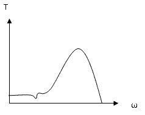

Characteristics of Electrical Machines

AC MOTORS (THREE PHASE)
(A) INDUCTION MOTOR
(A) INDUCTION MOTOR
Power Range : 1-5000 hp
Stator : 3-phase armature winding
Rotor : Squirrel cage
Advantage:
Induction motor is simple rugged in construction. It is Commonly used in fans, blowers, pumps etc.
If rotor has wound field then variable speed may be obtained using variale
rotor resitance and it is used for applcations like cranes, hoists, etc.
(B) SYNCRONOUS MOTOR:
Power Range: 1-5 hp and rotor is permanent magnet.
Applications:
- (1) Transport sheet material where precise speed is critical.
(2) Electric Clocks.
Power Range: 1,000-50,000 hp
Rotor: DC field winding.
Used for driving large constant loads and for power factor correction.
DC MOTORS
(a) SHUNT MOTOR:
Applications:
- Used for precise and smooth speed control in a wide range like rolling mills, paper mills, textile mills etc.
(b) SERIES MOTOR:
Applications:
Used in mixer machines, lifts and cranes.
The speed torque chracteristics of DC Series Motors is self releasing means as load torque increases then speed reduces and vice-versa.
(c) COMPOUND MOTOR:
Applications:
Applications:
- The traction motors in electric locomotives are compound motors whose characteristics are close to DC Series Motors.In these motors
torque can easily be controlled during starting as well as under running conditions.